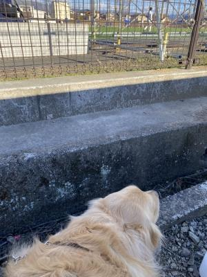
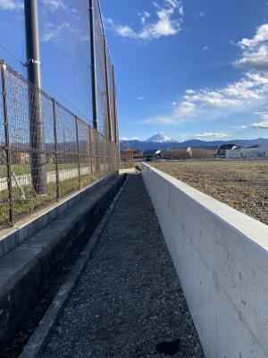
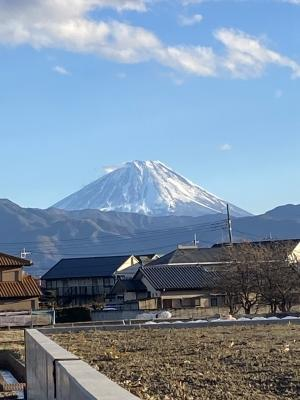

トレマ見に、冬の山梨行って来た !
25日(日)、東海大甲府のサッカー部が、日本航空石川と
トレーニングマッチをすると聞いて行ってきました〜 !
クリスマスだよ〜(笑)。
日本航空石川には、ハルが中学生のとき、所属していた
FC Himawari の仲間が3人進学しました。
1年生だし、試合に一緒に出られるとは限らないけど、
元気な姿が見たくて行っちゃった〜。
前日すごい寒波が来てて、名古屋でも10センチの積雪があったんだけど、
山梨はそんなに雪深い地区ではないので足止めをくらうことなく
順調にグランドへ到着することができました。
途中、SAとかで車を降りてひまりさんとドッグランに行っても
そんなに寒くなかったので、「今日は暖かいねぇ〜。」とのんきにしていたら
甲府盆地は風も強くて極寒だった・・・(汗)。
ひまり氏は毛皮着てるからいいよ !
ちなみに服着てるのは、寒いからではなく
車内が毛だらけになるのを防ぐためなんだけど・・・
役に立ったかどうか・・・アヤシイです(笑)。
あたしのズボンもまっ白ですわ(爆)。

わんこはグランドには入れないのでフェンスの向こうからのぞき見(笑)だよ。
ひまりさん、ハルがいることはたぶん気付いてないよね(笑)。

↑
こんな感じでくっきり富士山 ! うつくしー

冬の富士山はやっぱりキレイですねぇ。
日本航空の元Himawariくんたちにも会って話ができました〜。
かれこれ半年以上ぶりで、みんな身体も大きくなってました。
そんで、中学生だった頃はみんな日焼けして真っ黒だったのに
なんだか色白さんになってたのにはちょっと意外だったなぁ。
「色白にならん ? 」って聞いたら、
「だって、石川ってぜんぜん日がささんもん。」だって(笑)。
とりあえず、みんな元気そうでホントよかった。
試合でもみんな一緒に出られてて、
お互いポジションがマッチアップになってたのが
見ていて楽しかったョ〜 !
ただ、ハルはいつもとは全然違う、センターフォワードで出ていたので
何があったのかしら〜と、思っていたらフォワードの子がインフルだって !
コロナも最近また増えてきてるけど、インフルがものすごく流行ってて
年末に予定されていた遠征が中止になってしまったそうです〜(悲)。
それにしてもハルは最近、便利屋のようになって来ているなぁと(笑)。
ジュニアユースの時は中盤の真ん中が定位置だったんだけど、
今まで、1年生大会とかも、ずっとウィングが中心だったかな ?
でも見るたびに(ビデオとか)左右が入れ替わってたり、先日は
「突然サイドバックやれって言われた。今までやったことないのに
お前、サイドバックの動きわかんないの ? って言われた。」とか
途方に暮れたようにぼやいてて爆笑したんだよね。
最近は「〜がいなかったから、今日はトッブ下やった。」とか
「ボランチは難しい。」とか言ってて「オマエのポジションはどこなんや ? 」
って思っていたけど、とうとうセンターフォワードっすか !
センターフォワードなんて、ジュニア時代以来・・・
中学生になってからはほぼやってないじゃん ? できるの ? (笑)
まぁ、昔取った杵塚 ?? (笑)
全く分からんわけじゃないと思うからなんとかなってたみたいだけど・・・
「どのポジションでもできます ! 」って、悪いことじゃないとは思うけどね。
ただ、器用貧乏にはならないように。
ホントの意味でただ便利に使われるのはどうかと思うよ。
自分だけの武器を、常に意識して持ってて欲しいと願っています。